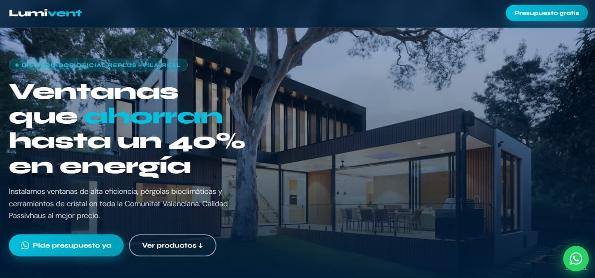
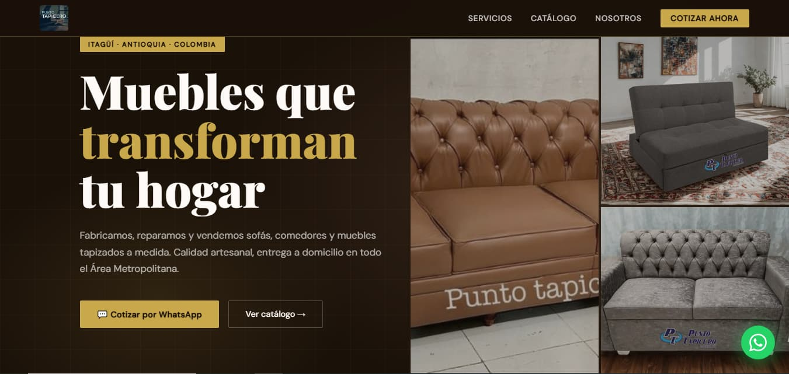

¿Tu negocio en Castellón no tiene web o la que tienes no te trae clientes? Te la creo rápida, bonita y preparada para aparecer en Google. Hablas directamente conmigo — sin agencias, sin comerciales, sin esperas de semanas.
Negocios de Castellón y Vila-real con web profesional desde 80€
Tu web tiene que hacer una sola cosa: convertir a alguien que busca en Google en un cliente que te llama o te visita en Castellón.
El cliente de Castellón busca desde el móvil mientras pasea por la Rambla o come en el Mercado Central. Tu web tiene que verse perfecta en cualquier pantalla o ese cliente se va.
El 53% de los usuarios abandona una web que tarda más de 3 segundos. Todas mis webs para Castellón se optimizan para cargar rápido — Google lo premia y tus clientes también.
Diseño cada web con la estructura que Google necesita para entender tu negocio en Castellón. SEO básico incluido desde el primer día sin coste adicional.
No relleno tu web con frases vacías. Te ayudo a redactar los textos pensando en lo que le importa al cliente de Castellón — claro, directo y sin tecnicismos.
WhatsApp, teléfono, formulario. El cliente llega a tu web en Castellón y en un clic ya te está contactando. Sin obstáculos entre el interés y la llamada.
El candado verde de seguridad (https) es obligatorio. Google penaliza las webs sin SSL y los clientes de Castellón no se fían de webs sin él. Incluido en todos los planes.
Distintos sectores, distintos estilos. Lo que tienen en común: están pensadas para convertir visitas en clientes, no para ganar premios de diseño.


Tu negocio podría estar aquí
Precios fijos, sin letra pequeña. Lo que ves es lo que pagas. La web es tuya desde el primer día.
Las agencias de Castellón tienen estructura de empresa: alquiler, nóminas, comerciales. Ese coste lo pagas tú. Conmigo pagas solo el trabajo — y hablas siempre con quien lo hace.
Sin reuniones, sin procesos complicados. Todo por WhatsApp desde Castellón o donde estés.
Cuéntame tu negocio en Castellón y qué necesitas. En menos de 24 horas tienes presupuesto claro y sin letra pequeña.
Logo, fotos y textos de tu negocio. Si no tienes algo te oriento. Sin contenido no hay web, pero lo hacemos juntos.
En 7-15 días tienes el diseño listo para revisar. Hacemos los ajustes necesarios y cuando estés conforme, la publicamos.
La publicamos, la registramos en Google Search Console y empieza a trabajar para conseguirte clientes en Castellón.
El mejor SEO local de Vila-real y provincia. Me creó la ficha de Google Maps desde cero, la verificó, gestionó las fotos y las reseñas y en 15 días mi negocio estaba en el top 3. Super recomendado.
Gracias por todo, me ha puesto en el mapa. Excelente servicio, no dudaré en contratar más servicios.
Estaba buscando cómo reclamar mi negocio e incluso busqué hasta en Castellón. Él me solucionó el problema, gestionó reseñas y fotos. Ahora mi negocio sale muy bonito en Maps. Lo mejor fue la cercanía y los precios.
Una web sencilla para un autónomo o negocio de Castellón cuesta desde 80€. Una web corporativa completa está desde 150€. El pack web más Google Maps para Castellón es desde 250€. Sin letra pequeña ni costes ocultos. Pide presupuesto por WhatsApp y te respondo en menos de 24 horas.
Las agencias de Castellón cobran desde 800-1500€ por una web básica porque tienen estructura de empresa que pagar. Yo cobro desde 80€ porque trabajo solo y sin esos costes fijos. Además hablas siempre conmigo — el que diseña, el que optimiza y el que te responde al WhatsApp.
Sí. Todas las webs incluyen SEO básico: estructura correcta, velocidad optimizada, adaptación a móvil y etiquetas para Google. Si además quieres aparecer en Google Maps en Castellón o en primeras posiciones de Google para tu sector, eso lo hablamos aparte con un plan de posicionamiento.
No. La web es tuya con un pago único. No cobro cuotas mensuales por el diseño. Lo único que pagas cada año es el hosting y el dominio — costes directos al servidor que rondan 50-100€ al año según el plan.
Sí. He hecho webs para comercios del centro de Castellón, clínicas, talleres, servicios a domicilio, distribuidores industriales y hostelería. Si tienes un negocio en Castellón capital, Benicàssim, Almassora o cualquier municipio de la provincia, cuéntame tu caso.
Cada día sin web es un día que tus clientes de Castellón te buscan en Google y encuentran a tu competencia. Lo solucionamos esta semana.
📲 Escríbeme ahora — presupuesto gratis